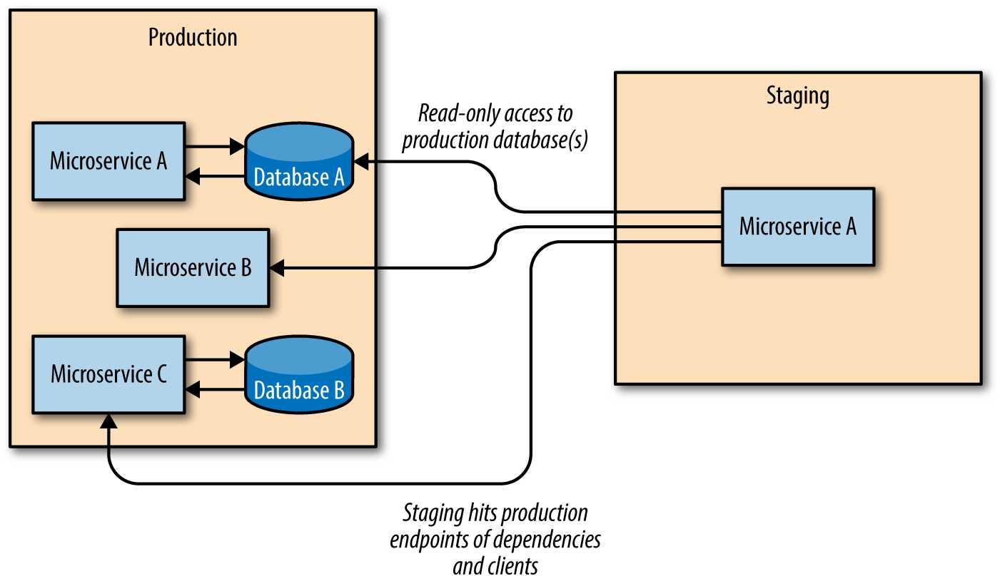

Partial staging
نوع دوم محیط staging، partial staging نامیده میشود. همانطور که از نامش پیداست، این یک کپی آینهای
کامل از محیط production نیست. بلکه، هر microservice محیط staging خاص خود را دارد، که یک pool از سرورها
با (حداقل) پورتهای frontend و backend مخصوص staging است، و هنگامی که buildsهای جدید به فاز staging معرفی
میشوند، با کلاینتهای upstream و وابستگیهای downstream که در production اجرا میشوند، ارتباط
برقرار میکنند (شکل 3-4).
شکل 3-4. Partial staging
استقرارهای Partial staging باید به تمام endpointsهای production کلاینتها و وابستگیهای یک microservice ضربه بزنند تا وضعیت دنیای واقعی را تا حد امکان دقیق شبیهسازی کنند. برای انجام این کار، تستهای staging خاصی باید نوشته و اجرا شوند، و هر ویژگی جدیدی که اضافه میشود، احتمالاً باید با حداقل یک تست staging اضافی همراه باشد تا اطمینان حاصل شود که به طور کامل تست شده است.
از آنجایی که microservices با محیطهای partial staging با microservicesهای production ارتباط برقرار
میکنند، باید نهایت دقت را به عمل آورد.
حتی اگر partial staging به درخواستهای فقط خواندنی محدود شده باشد، سرویسهای production میتوانند به
راحتی توسط استقرارهای staging بد که درخواستهای بد ارسال میکنند و/یا سرویسهای production را با
درخواستهای بیش از حد بارگذاری میکنند، از کار بیفتند.
این نوع از محیطهای staging نیز باید به دسترسی فقط خواندنی پایگاه داده محدود شوند: یک محیط staging هرگز نباید در یک پایگاه داده production بنویسد. با این حال،
32 | فصل 3: پایداری و قابلیت اطمینان